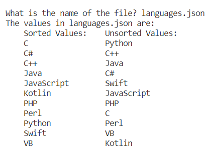
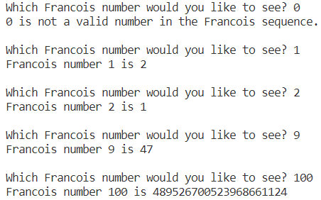

Sort Algorithm
The sort algorithm is a program that will sort any list from a json file that is entered by the user. This program is programmed in Python and was made for my CSE 130 Algorithm Design class at Brigham Young University-Idaho.
Code
Sort Algorithm
x

Sort Algorithm
# Imports the json library.
import json
# Creates a get filename function.
def get_filename():
return input('What is the name of the file? ')
# Creates a function that returns a list of the the inputted file.
def form_list(filename):
filename = f'Lab07_08\{filename}'
# Opens a file and loads it into a json object.
with open(filename, 'r') as file:
assert filename.split('.')[-1] == 'json'
text = file.read()
data = json.loads(text)
# Loads the json object into a list.
assert 'array' in data
list = data['array']
# Returns the list.
return list
# Creates a function that sorts and returns the inputted list.
def sort_list(list):
assert type(list) == type([])
assert len(list) >= 0
# The outer loop of the sort function which determines i_pivot.
for i_pivot in range(len(list) - 1, 0, -1):
i_largest = 0
# The inner loop of the sort function which determines i_check.
assert type(i_pivot) == int
for i_check in range(i_pivot):
# Checks to see if the value of the list at i_check is
# greater than the value of the list at i_largest.
assert type(i_check) == int
assert 0 <= i_check <= i_pivot
if list[i_check] >= list[i_largest]:
i_largest = i_check
# Checks to see if the value of the list at i_largest is
# greater than the value of the list at i_pivot.
assert type(i_largest) == int
assert 0 <= i_largest < i_pivot
assert type(i_pivot) == int
assert 0 <= i_pivot < len(list)
if list[i_largest] >= list[i_pivot]:
list[i_largest], list[i_pivot] = list[i_pivot], list[i_largest]
# Returns the sorted list.
return list
# Creates a function that prints the results.
def print_results(filename, sorted_list):
assert type(sorted_list) == list
print(f'The values in {filename} are:')
for value in sorted_list:
print(f' {value}')
print()
# Creates a function that prints the results and the original list.
def print_results_compare(filename, unsorted_list, sorted_list):
assert type(sorted_list) == list
print(f'The values in {filename} are:')
print(' Sorted Values: Unsorted Values:')
for i in range(len(sorted_list)):
print(f' {sorted_list[i].ljust(15)} {unsorted_list[i]}')
print()
# Creates a function that runs the test cases.
def run_test_cases():
# Creates a list of the test cases.
test_cases = [
'empty.json', 'trivial.json', 'languages.json',
'states.json', 'cities.json'
]
if __debug__:
for element in test_cases:
assert type(element) == str
assert element.split('.')[1] == 'json'
# This nested loop runs through every test case.
for filename in test_cases:
print(f'What is the name of the file? {filename}')
print_results(filename, sort_list(form_list(filename)))
# Creates the main function.
def main():
# Ask's if this is a test.
test = input('Is this a test (y/n)? ')
print()
# Checks to see if it is a test.
if test == 'y':
# Runs the test cases if it is a test.
run_test_cases()
else:
# Runs the program as normal if not a test run.
filename = get_filename()
assert filename.split('.')[-1] == 'json'
print_results_compare(filename, form_list(filename), sort_list(form_list(filename)))
# Runs the main function if the program isn't imported.
if __name__ == '__main__':
main()
Francois Number Sequence
The Francois Number Sequence is a program that will generate a number in a sequence that the user wants. This program is programmed in Python and was made for my CSE 130 Algorithm Design class at Brigham Young University-Idaho
Francois
x

Francois
# This function will return the number that the user chooses.
def get_num():
if __debug__:
num = input('Which Francois number would you like to see? ')
for char in num:
assert '0' <= char <= '9'
num = int(num)
return num
return int(input('Which Francois number would you like to see? '))
# Creates a function that runs the test cases.
def run_test_cases():
# Creates a list of the test cases.
test_cases = [-1, 0, 1, 2, 9, 100, 200]
# This nested loop runs through every test case.
assert type(test_cases) == list
for case in test_cases:
assert type(case) == int
print(f'Which Francois number would you like to see? {case}')
if check_number(case):
print(f'Francois number {case} is {get_francois(case)}\n')
# A funtion that checks the number to make sure that it is valid.
def check_number(num):
assert type(num) == int or type(num) == float
if num <= 0 and (num % 2 == 0 or num % 2 == 1):
print(f'{num} is not a valid number in the Francois sequence.\n')
return False
return True
# This function finds and returns the wanted number of the sequence.
def get_francois(num):
# Intializes the array that stores the numbers needed to
# determine to next number in the sequence.
# 1 % 2 = 1 and 2 % 2 = 0
first_two = [1, 2]
# If the wanted number of the sequence is greater than 2
# this loop finds the number.
assert type(num) == int
for count in range(3, num + 1):
assert type(first_two) == list
assert type(count) == int
assert first_two[0] + first_two[1] > first_two[1]
assert first_two[0] + first_two[1] > first_two[0]
first_two[count % 2] = first_two[0] + first_two[1]
# Return the number that the user requested.
assert num % 2 == 1 or num % 2 == 0
return first_two[num % 2]
# The main function which runs the program.
def main():
# Ask's if this is a test.
test = input('Is this a test (y/n)? ')
print()
# Checks to see if it is a test.
if test == 'y':
# Runs the test cases if it is a test.
run_test_cases()
else:
# Runs the program as normal if not a test run.
num = get_num()
if check_number(num):
print(f'Francois number {num} is {get_francois(num)}')
# Run the program using main if the file is not imported.
if __name__ == '__main__':
main()